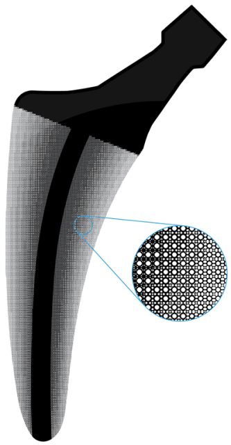

Compatibility in Microstructural Optimization for Additive Manufacturing
Additive Manufacturing, 2019
| Eric Garner, Helena Kolken, Charlie Wang, Amir Zadpoor, and Jun Wu |
| Department of Design Engineering, TU Delft |
| Department of Biomechanical Engineering, TU Delft |

An orthopaedic implant with functionally graded microstructures optimized by the proposed method. The different microstructures have distinct topologies but are still well connected, forming an integral part.
Abstract
Microstructures with spatially-varying properties such as trabecular bone are widely seen in nature. These functionally graded materials possess smoothly changing microstructural topologies that enable excellent micro and macroscale performance. The fabrication of such microstructural materials is now enabled by additive manufacturing (AM). A challenging aspect in the computational design of such materials is ensuring compatibility between adjacent microstructures. Existing works address this problem by ensuring geometric connectivity between adjacent microstructural unit cells. In this paper, we aim to find the optimal connectivity between topology optimized microstructures. Recognizing the fact that the optimality of connectivity can be evaluated by the resulting physical properties of the assemblies, we propose to consider the assembly of adjacent cells together with the optimization of individual cells. In particular, our method simultaneously optimizes the physical properties of the individual cells as well as those of neighbouring pairs, to ensure material connectivity and smoothly varying physical properties. We demonstrate the application of our method in the design of functionally graded materials for implant design (including an implant prototype made by AM), and in the multiscale optimization of structures.Download
 |
Paper 10.9 MB |
Code (Matlab) 26.0 KB |
Related Projects
Continuous Optimization of Adaptive Quadtree Structures
Minimum Compliance Topology Optimization of Shell-Infill Composites for Additive Manufacturing
Infill Optimization for Additive Manufacturing -- Approaching Bone-like Porous Structures
Self-Supporting Rhombic Infill Structures for Additive Manufacturing
A System for High-Resolution Topology Optimization
Bibtex
@article{Garner2019AM,
author={Garner, Eric and Kolken, Helena and Wang, Charlie and Zadpoor, Amir and Wu, Jun},
title={Compatibility in Microstructural Optimization for Additive Manufacturing},
journal={Additive Manufacturing},
volume={26},
pages={65-75},
year={2019},
doi={10.1016/j.addma.2018.12.007},
issn = {2214-8604}
}